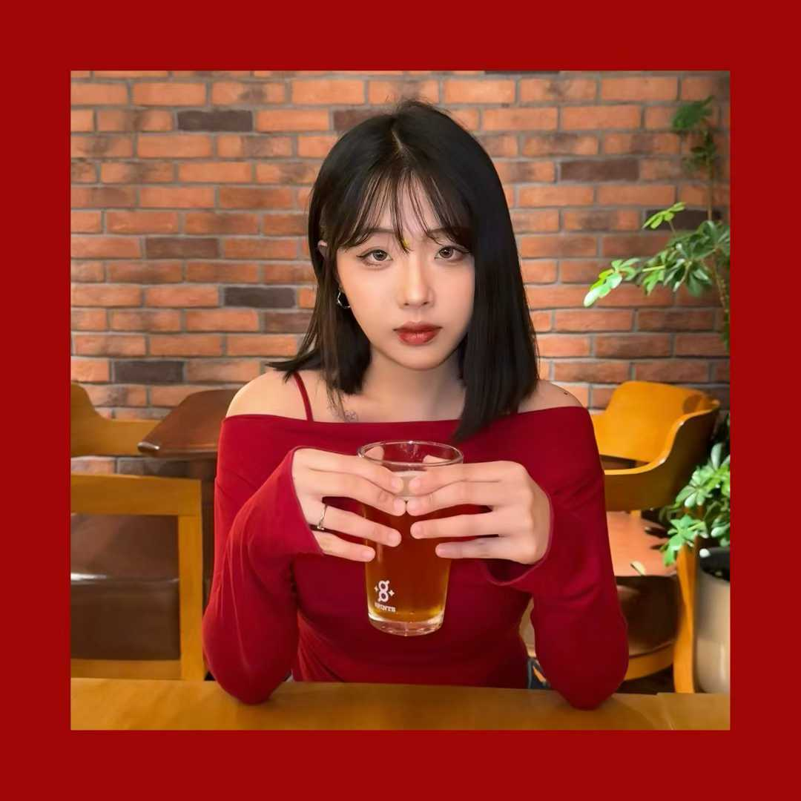
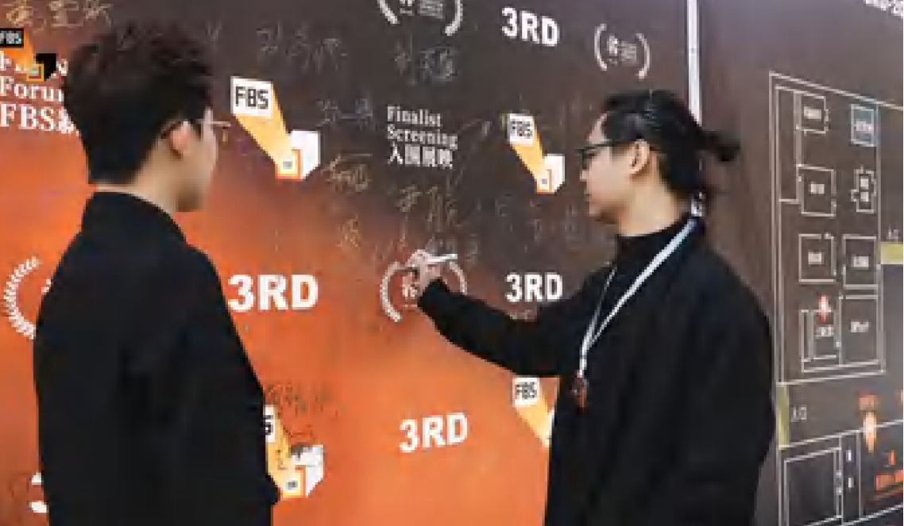
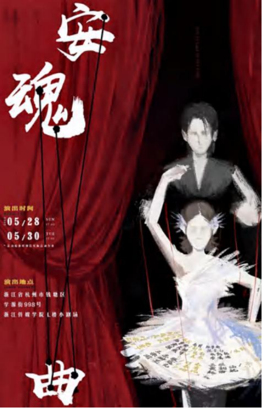
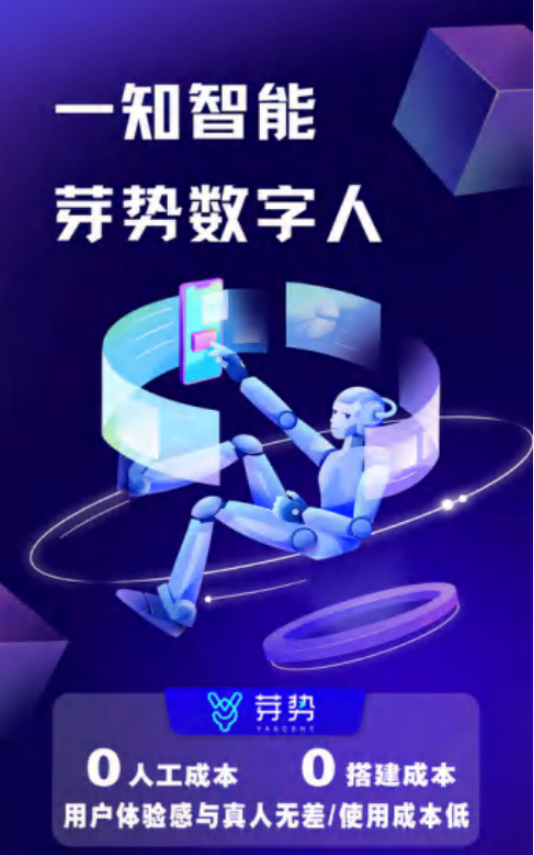
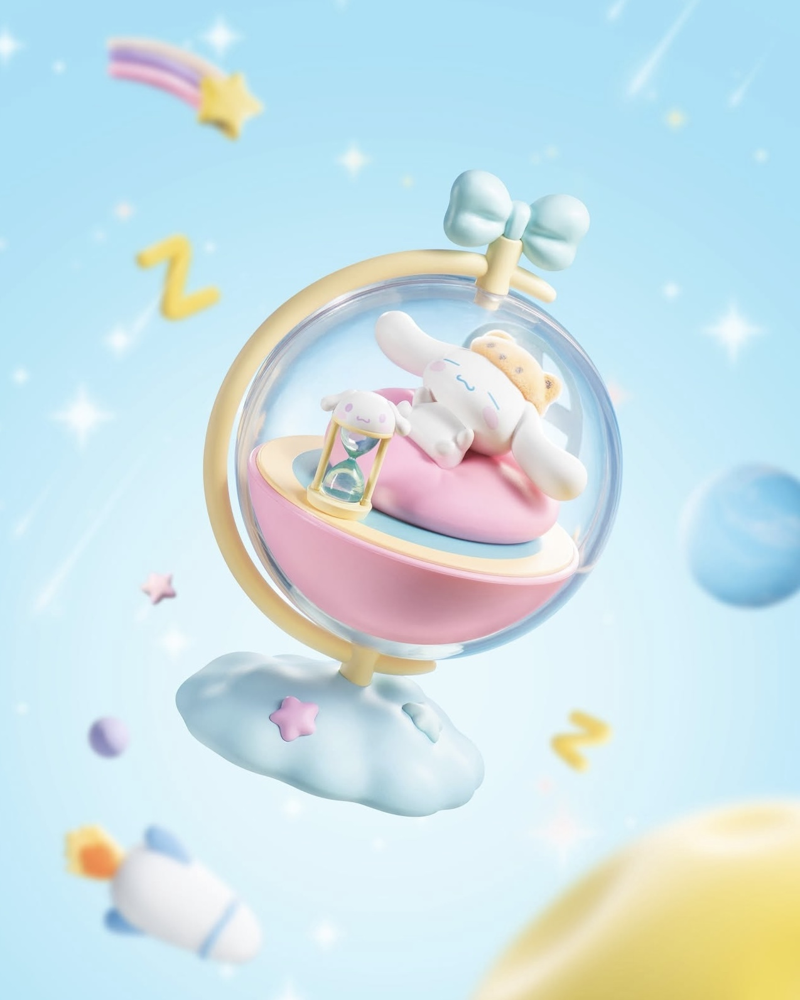
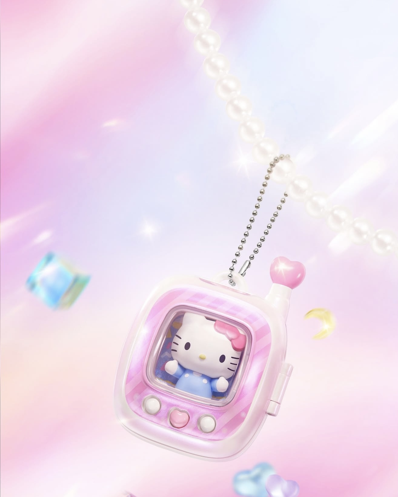
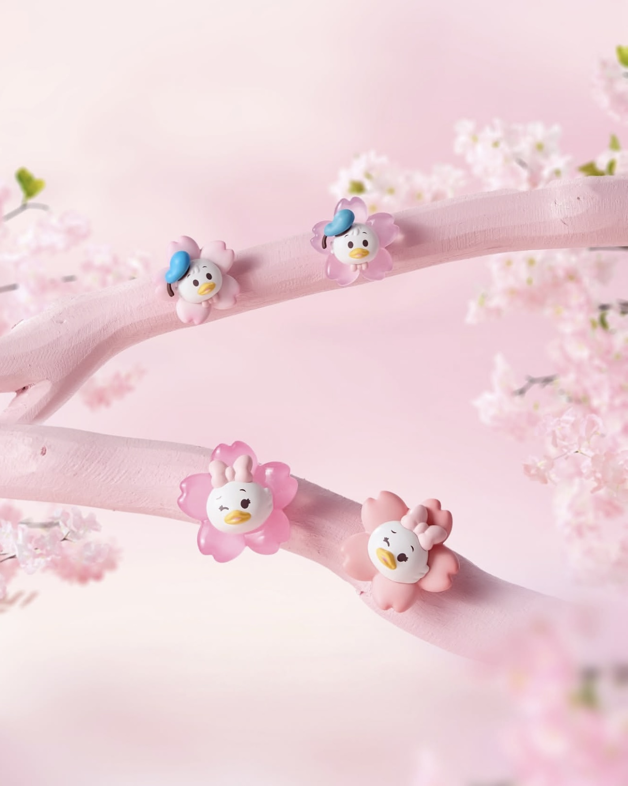
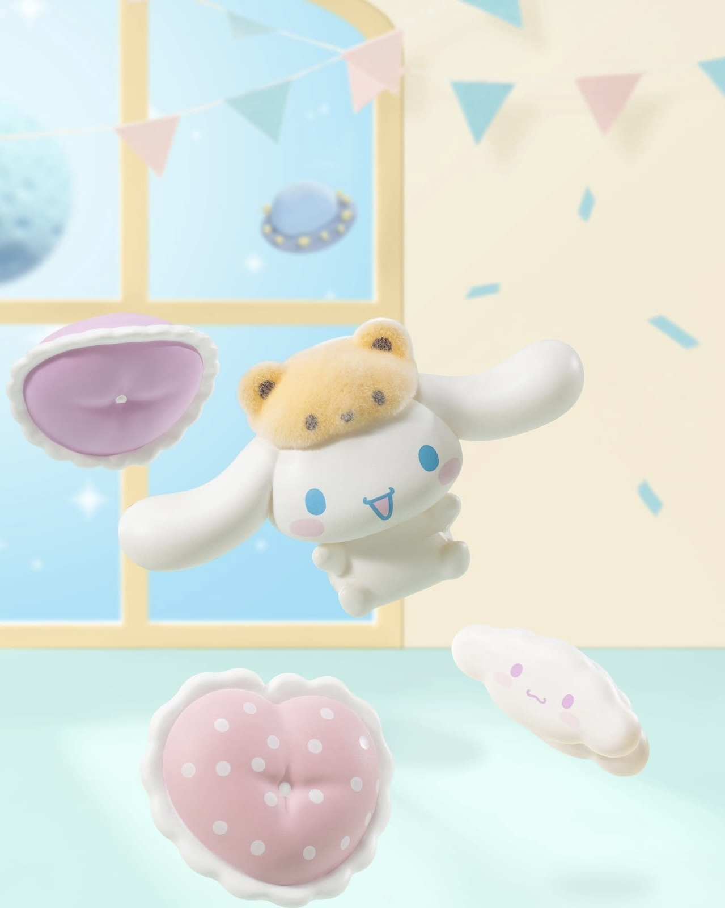
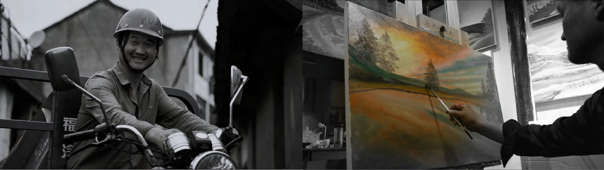

Integrated Marketing, Data Analysis, Design & Creation, Social Media Operations, Filming & Editing, User Insights, Project Management
About Me

Academic Background
Hong Kong Baptist University (HKBU) 2025 – 2026
Master of Science in AI & Digital Media
Communication University of Zhejiang 2021 – 2025
Bachelor of Arts with a specialty of Film & TV Cinematography & Production
Core Professional Competencies
As a brand communication professional with a solid academic foundation and rich practical experience, I possess comprehensive expertise across multiple key domains of brand communication and digital marketing. My core capabilities include global branding, project timeline management, PR and agency liaison in brand communication; social media strategy formulation, Discord community operation, and data analytics in marketing operations; and English copywriting, professional videography, and post-production in creative production. Additionally, I am proficient in AI empowerment tools and technologies such as AI-assisted design, Midjourney, and digital human technology. I also have strong project coordination skills, including cross-functional teamwork, multitasking, and multi-market localization, with a focus on integrating brand logic, creative production, and AI technology to deliver high-quality brand communication content and projects.
Project Practice
Project 01: MINISO Global Center - Overseas Marketing Intern
Brand Visibility & Localization
Executed global IG/TikTok/FB strategies with localized content,
achieving 10M+ monthly views.
Project Timeline & Production
Managed calendars for Disney/Harry Potter launches, growing follower
s by 100k+ per platform.
Cross-functional Coordination
L iaised with creative teams on the "Stitch" series, reaching 1M+ organic
views per viral post.
Community & Insights Archiving
Consolidated 100k+ Discord interactions and 10k+ UGC to support
brand optimization talks.
Project 02: 2024 The 3rd FBS New Youth Script & Video Exhibition - Exhibition Planning & Data Analysis
Pre stage – Brand Asset Management & Planning
Established a digital archive for 1,000+ scripts and 500+ creators, ensuring efficient resource categorization for branding teams.
Collect new gameplay and peripheral product, then combine them with the popular trends of the target audience to construct themes and related activities.
Mid term – Content Coordination & Liaison
Consolidated script submissions and liaised with production groups to ensure content aligned with core brand values and project goals.
Post production – Performance Archiving & Insights
Analyzed audience feedback to drive a 30% increase in weekly engagement, leveraging data to refine brand storytelling strategies.

Project 03: AI Creative Output






Project 04: Case Study of Digital Human Generation
BEFORE GENERATION
COLLECTION PROCESS
Green screen setup (three-point lighting, Recording equipment testing, Camera parameter settings)
Model requirements: Metal accessories are not allowed, model should speak continuously for five minutes, and hand movements should not cover the face
Model training: After facial polishing of the model, it is placed into the "Yashi" AI training model for voice cloning and image construction.
(This project contains information related to the enterprise)
Script construction: Prepare a digital live streaming script script according to the requirements of Party A
Barrage response triggering mechanism: Disassemble similar live streaming cases, summarize common barrage issues, and set trigger words and response language before broadcasting
Streaming media platform testing: comprehensively evaluate whether the output is smooth based on multiple live streaming indicators such as GMV, CTR, GPM, ROI, etc
Project 05: Visual Storytelling - Public Service Advertisement 'Approaching'

「Public service advertisement 'Approaching'」
Plan according to the Kwai brand slogan: "Embrace hundreds of millions of possibilities of life" and the main audience group "Generation Z"
Mainly focusing on the characteristic of "occupational contrast" to find shooting subjects
Once spread positive energy content on Kwai
Recording the real life of content creators from a third-party perspective
Post: Planner, Producer
Third Prize in the 14th National College Student Advertising Art Competition
Enterprise Special Award – Brand "Kwai" (Video Category)
First Prize of the 9th Zhejiang University Student News Festival (Microfilm Category)
Subject: How do four women from different places view the "feminine labels" imposed on them by the world, reconcile with past pains, and restart their lives with a new attitude towards life.
Women's documentary 'Starting from scratch'
The creative process
Object selection: Based on the traffic mechanisms of various platforms, the final choice is to select women of different age groups who have published high-quality lifestyle content on the platform "Douban".
Pre – and mid shooting: Conduct offline meetings with selected subjects, design stylized shots and shooting content routes based on personal experiences and personalities.
Post production: Extracting the core themes of filming and interview content into subheadings to make the main storyline of long videos clearer.